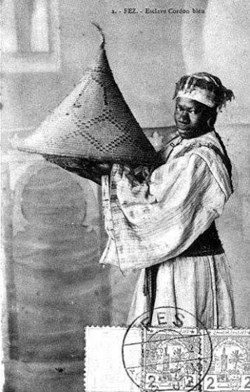
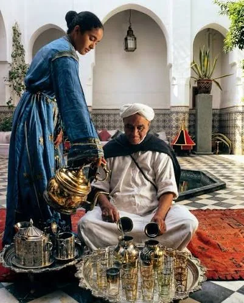
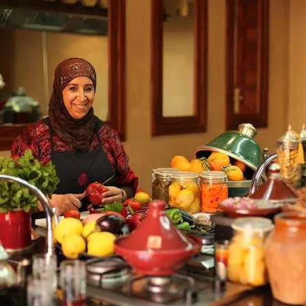

The Dadas: The Women Who Preserved Morocco's Family Recipes
Meet the Dadas, the women who preserved Morocco's family recipes across generations — and whose slow-cooked legacy lives on at Dar Mansour, Koh Phangan.
Who Were the Dadas?
In short: a Dada was a trusted household caretaker in Moroccan families — historically often a woman of Sub-Saharan African origin — who raised children across generations and became a guardian of the family's cooking and its recipes.
Behind every great Moroccan family table, there was often a woman whose name rarely appeared in history books. She was known simply as the Dada.
The word Dada (دادا) traditionally referred to a trusted nurse, governess or household caretaker. Yet within Moroccan families, these women became much more than domestic employees. They raised children, cared for several generations, shared stories, soothed tears and quietly shaped daily family life.
Many Dadas were women of Sub-Saharan African origin, particularly from present-day Mali and Senegal. Their presence in Morocco is inseparable from the history of the trans-Saharan slave trade, through which many women were brought to North Africa centuries ago.
As Moroccan society evolved and slavery was officially abolished, many remained with the families they had served, becoming respected members of the household. Over time, the word Dada came to represent affection, trust and deep respect.
For many Moroccans today, a Dada is remembered not only as a caregiver, but as a second mother whose influence extended far beyond the home.
More Than Cooks: The Heart of Moroccan Homes
The Dadas were never simply responsible for preparing meals. They preserved the rhythm of family life.
They knew every child's favourite dish. They remembered recipes for weddings, celebrations and Ramadan. They prepared mint tea exactly as each family preferred it. They passed down songs, stories and traditions while working quietly behind the scenes.
Long before recipes were written in cookbooks, they lived in memory. And it was often the Dadas who carried that memory — generation after generation.
Their kitchens became places where knowledge was transmitted not through written instructions, but through observation, repetition and instinct.
A pinch of cumin. A handful of coriander. The colour of caramelised onions. The scent that tells you a tajine is finally ready. These are things no recipe can truly teach.

Guardians of Morocco's Culinary Memory
Much of Morocco's extraordinary culinary heritage survived because these women prepared the same dishes thousands of times throughout their lives.
Every family had its own version of a tajine. Its own spice blend. Its own couscous. Its own celebrations.
Rather than following precise measurements, the Dadas cooked by intuition. They tasted. Adjusted. Waited. Then tasted again. Cooking was never rushed, because flavour itself needs time.
Their influence can still be found throughout Moroccan cuisine today — not because they signed famous cookbooks, but because they quietly shaped the flavours that millions of Moroccans continue to recognise as home.

A Philosophy of Slow Cooking
The Dadas understood something that modern kitchens often forget: time is one of the most important ingredients.
A traditional Tanjia Marrakchia can spend an entire night cooking slowly in the warm ashes of a neighbourhood hammam. Couscous is carefully steamed three or even four times before each grain becomes light and perfectly separate. Homemade preserved lemons take weeks to develop their unmistakable depth of flavour. Even the spice blends are prepared with patience, balancing aromas rather than overwhelming the palate.
This is why authentic Moroccan cuisine cannot be rushed. It rewards patience. It celebrates craftsmanship. And it reminds us that the finest meals are often those that take the longest to prepare.
The Principles That Defined the Dadas' Kitchens
- Slow before fast — great food follows its own rhythm, not the clock.
- Cooking by instinct — recipes were learned through observation and experience rather than written instructions.
- Hospitality above everything — guests were welcomed generously, often with more food than expected, because abundance was considered an expression of kindness.
- Nothing wasted — every ingredient had a purpose. Bread became tomorrow's breakfast, vegetables enriched broths, and slow cooking naturally encouraged respect for every product.
Their Legacy Lives On at Dar Mansour
Dar Mansour was created not only to celebrate Morocco's recipes, but also the philosophy behind them.
Many of the recipes and cooking methods we share today come directly from the Dadas who cooked for Maïja's stepmother's family in Morocco. Passed down through generations, they were never learned from cookbooks, but through years spent cooking side by side — observing, tasting and patiently repeating the timeless gestures that define Moroccan family cuisine.
Our signature dishes are prepared slowly, respecting the time each recipe truly deserves. Many of our main dishes are available by pre-order — not as a constraint, but as a way of honouring traditional cooking methods that simply cannot be hurried.
Each evening in Koh Phangan, we strive to preserve the same values that have shaped Moroccan family kitchens for generations:
- Patience
- Craftsmanship
- Generosity
- Hospitality
Because preserving a culinary tradition isn't simply about reproducing recipes. It's about preserving the care, the intention and the time with which they were passed down.
For us, these recipes are more than traditional Moroccan dishes. They are part of Maïja's family story, shared with her through the Dadas who lovingly preserved the culinary traditions of her stepmother's family across generations.
Sharing them at Dar Mansour is our way of honouring not only their recipes, but also the remarkable women whose quiet devotion helped preserve one of Morocco's richest culinary traditions.
Final Thoughts
The Dadas may rarely appear in history books, yet their influence lives on in almost every traditional Moroccan kitchen. They shaped recipes. They preserved traditions. They passed down gestures that cannot be measured in grams or minutes.
Their legacy reminds us that the greatest meals are rarely the most complicated. They are the ones prepared with patience, generosity and love.
At Dar Mansour, every slow-cooked tajine and every carefully prepared tanjia is a small tribute to these remarkable women — and to our slow-cooked philosophy, inspired by everything the Dadas taught us. To taste that lineage for yourself, reserve your evening and let us slow-cook a story just for you.
Frequently asked questions
Who were the Dadas in Morocco?
The Dadas were trusted household caretakers and cooks who played a central role in Moroccan family life. Many were women of Sub-Saharan African origin whose lives were shaped by the history of the trans-Saharan slave trade. Over generations, they became respected members of the households they served and helped preserve Morocco's culinary traditions.
Why are the Dadas important to Moroccan cuisine?
Much of Morocco's family cooking was transmitted orally through the Dadas. Their knowledge, experience and daily practice helped preserve recipes, cooking techniques and hospitality traditions that continue to define Moroccan cuisine today.
What makes Dada-style cooking unique?
Patience above all. Traditional dishes are never rushed. Tajines simmer gently for hours, couscous is steamed several times, and flavours develop naturally over time rather than through shortcuts.
How does Dar Mansour honour this tradition?
Many of our recipes come directly from the Dadas who cooked for Maïja's stepmother's family in Morocco — passed down through generations rather than written in cookbooks. We honour them by cooking in the same spirit, guided by the values that defined their kitchens: patience, craftsmanship, generosity and genuine hospitality. Many of our signature dishes are prepared by pre-order so they can be given the time they truly deserve.
Taste the story around our table
The best chapters are written over a slow Moroccan dinner. Reserve your evening at Dar Mansour.